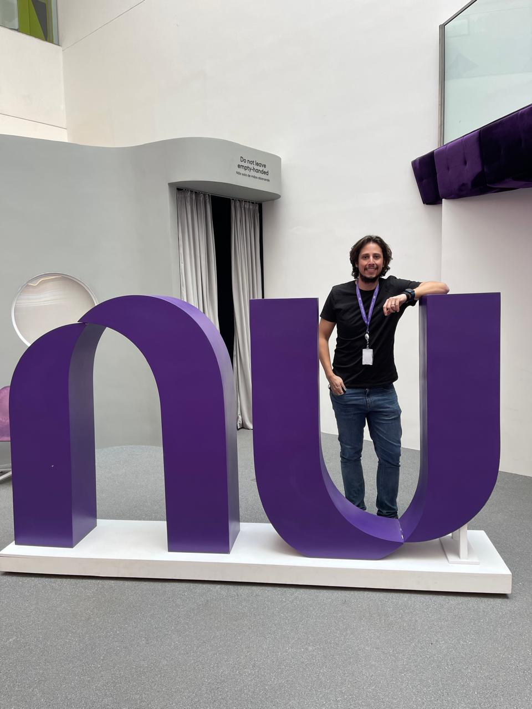

Entrevista com Thiago Andrade - Gestor de Produtos do Nubank
Publicado em: 08 de Agosto de 2025
Por: Wesley da Silva Rocha
De programador a gestor internacional, Thiago Andrade construiu uma carreira marcada por escolhas estratégicas, experiências multiculturais e um olhar atento às pessoas. Nesta entrevista, ele compartilha os aprendizados que o levaram de usinas de aço no interior do Brasil a liderar equipes nos Estados Unidos, Alemanha e Brasil.
A Jornada de Thiago: Da Programação à Gestão de Produtos e Projetos
Thiago, formado em Engenharia de Computação, compartilha como sua carreira tomou rumos inesperados, sempre buscando desafios na área de gestão e, principalmente, influenciar decisões estratégicas. Quando iniciou sua jornada profissional, ele não tinha uma empresa específica em mente. “Na época, eu só sabia que começaria como desenvolvedor. Na cidade onde eu morava, havia duas empresas que faziam consultoria, então apliquei e passei em uma delas. Eu trabalhei em um projeto focado em usinas de aço, um trabalho voltado para o desenvolvimento de software”, lembra ele.
Desde o início do curso de engenharia, Thiago já sabia que não queria seguir na área de programação por muito tempo. “Sempre gostei mais da área de gestão, de influenciar decisões. Eu queria poder contribuir ativamente para o que estava sendo feito na empresa e ajudar a decidir o rumo dos projetos, não apenas sentar e desenvolver código”, explica.
Thiago ainda faz questão de destacar como o mercado evoluiu.
“Antigamente, o desenvolvedor era a pessoa que recebia uma lista de requisitos, lia, codava e entregava. Hoje, em empresas como o Nubank, o desenvolvedor participa de todo o ciclo do desenvolvimento, propondo ideias e discutindo o produto do início ao fim. O papel de um desenvolvedor mudou muito nos últimos anos."
A transição para a gestão aconteceu naturalmente. Após um pouco mais de um ano em uma empresa, ele teve a oportunidade de trabalhar com processos. Dividiu seu tempo entre 50% desenvolvimento e 50% processos. "Essa transição foi bem fluida, e com o tempo, fiquei apenas na parte de processos, depois fui para projetos, tornei-me gerente de projetos e, por fim, gerente de produtos", conta.
Essa evolução, de acordo com Thiago, aconteceu porque ele estava constantemente em busca de novas oportunidades. Ele também teve a chance de morar no exterior, o que lhe trouxe uma nova visão sobre o mercado e gestão. “Essa experiência internacional mudou muito minha forma de ver o trabalho e a gestão", afirma. Essa busca por novos desafios o levou a viver experiências em três países diferentes, cada um com uma forma própria de enxergar o trabalho e a liderança.
Gestão Multicultural: Experiências nos EUA, Alemanha e Brasil
Quando perguntado sobre como foi atuar em três países com culturas de gestão tão diferentes, Thiago compartilha suas experiências.
“Comecei nos Estados Unidos, e lá a cultura é muito diferente do Brasil. O que me chamou atenção foi a cobrança nas demandas, mas também a rigidez com horários. Lá, se o trabalho não for finalizado às 18h, não há problema em deixar para o dia seguinte. Não é como no Brasil, onde as pessoas frequentemente fazem horas extras. Nos EUA, há muita cobrança, mas também uma preocupação em não comprometer tanto o bem-estar das pessoas. A gestão é muito mais rígida, com monitoramento constante sobre o que o colaborador está fazendo e suas entregas.”
Já na Alemanha, a abordagem de gestão é completamente distinta. “Na Alemanha, a cultura de trabalho é mais flexível, e há muito menos cobrança. O foco da gestão está na qualidade de vida do profissional. O país valoriza muito a saúde e bem-estar do trabalhador, e só depois foca nas entregas. Esse foco na qualidade de vida do colaborador, para mim, é essencial. Um profissional bem, em um ambiente saudável, naturalmente terá melhores entregas, mesmo com as demandas diárias.”
E o Brasil? Para Thiago, a cultura brasileira de gestão se aproxima mais da dos Estados Unidos, embora ainda esteja um pouco distante da flexibilidade da Alemanha. “Eu diria que o Brasil está mais para os EUA do que para a Alemanha, mas, de qualquer forma, ainda existe uma diferença em termos de cobrança e flexibilidade. No Brasil, temos uma cobrança mais intensa, similar à dos EUA, mas também é comum que se façam muitas horas extras. A gestão no Brasil, em muitos casos, é mais focada nas entregas imediatas, o que pode, às vezes, prejudicar o equilíbrio entre vida pessoal e profissional.”
A Gestão de Equipes: Ouvir, Alinhar e Priorizar Pessoas
Thiago reflete sobre como gerencia suas equipes, tanto no Brasil quanto nas experiências multiculturais que teve. “Quando chego em um novo ambiente como gestor, a primeira coisa que faço é ouvir as pessoas. A comunicação aberta é fundamental para entender o cenário em que estou entrando. É essencial saber o que as pessoas esperam de mim, tanto em termos da empresa, como de sua carreira e da minha postura como líder.”
Ele reforça que, antes de tomar qualquer decisão, é importante se familiarizar com a empresa, os projetos e a equipe. “A partir daí, busco entender como as pessoas se encaixam na cultura da empresa e do time. Faço isso para saber se estou no lugar certo, se preciso de mais pessoas no time ou se posso melhorar alguma coisa no desenvolvimento de cada membro."
Thiago coloca grande ênfase na comunicação, no alinhamento de expectativas e na cultura da equipe.
“Acredito que, para uma equipe funcionar bem, primeiro, devemos colocar as pessoas em primeiro lugar. Garantir que elas estejam bem é fundamental para o sucesso das entregas. Após isso, focamos em processos, usando metodologias adequadas para os objetivos que queremos alcançar."
Ao final, Thiago compartilha um conselho valioso para outros gestores: “Para mim, o mais importante é pensar nas pessoas. Sem elas, não há como garantir que o trabalho será bem feito. O foco nas pessoas, alinhando expectativas e garantindo que todos estejam bem, é o segredo para o sucesso de qualquer equipe.”
A Evolução da Gestão: Da Hierarquia para a Colaboração
Ao falar sobre mudanças na forma de liderar, Thiago refletiu sobre como o conceito de gestão evoluiu ao longo dos anos, saindo de um modelo engessado para algo mais aberto e colaborativo.
"Quando comecei, a visão de gestão era muito mais hierárquica. Sabíamos exatamente qual era a nossa posição, quem era nosso superior e o que nos era passado. Você recebia as demandas e simplesmente as entregava, sem questionar. Era um modelo muito mais engessado."
No entanto, com a evolução do mercado e das empresas, ele percebeu uma grande mudança nas estruturas de gestão. "Hoje, as estruturas são mais horizontais. Mesmo sendo gerente, quem está abaixo de você pode contribuir tanto quanto você. As ideias podem vir de qualquer lugar, e não importa se são de um gerente ou de um estagiário, todas são consideradas com o mesmo peso. A figura do gestor mudou. Ele deixou de ser alguém que só cobra e passou a ser um líder de fato. A gestão agora é mais colaborativa, onde todos têm a oportunidade de participar e trazer ideias."
Thiago ressalta, no entanto, que nem todos possuem o mesmo perfil. "Claro, existem perfis diferentes. Tem pessoas que realmente não estão interessadas em colaborar ou dar ideias. Elas estão lá para fazer o trabalho delas, e isso é totalmente válido. Mas também tem pessoas que adoram participar de todo o processo, ajudar a definir o rumo do projeto, e essas são as pessoas que eu gosto de engajar."
Como gestor, ele sempre busca garantir que o ambiente seja colaborativo.
"Eu tento sempre balancear entre o quanto cada pessoa está disposta a participar. Acredito que meu papel é garantir que todos sintam que podem contribuir de forma efetiva. Não quero ser o tipo de líder que está ali apenas mandando tarefas, mas sim aquele que cria um ambiente onde todos se sintam parte do processo e onde suas contribuições são valorizadas."
A partir dessa visão, perguntei ao Thiago como ele lida com os diferentes perfis que identifica na equipe. Questionei se ele consegue perceber quando um colaborador demonstra interesse por uma área específica assim como ele mesmo, que desde o início tinha inclinação para a gestão mesmo atuando na programação e se trabalha para direcionar esse talento.
Segundo Thiago, alguns profissionais deixam claro desde o início para onde querem seguir, o que facilita direcionar oportunidades. Nesses casos, ele busca criar caminhos para que a pessoa desenvolva habilidades naquela área de interesse, equilibrando o que a empresa precisa com o que o colaborador deseja construir para o futuro.
Superando Desafios e Construindo Resultados
Durante a conversa, compartilhei com Thiago que também me interesso por migrar para áreas de gestão, unindo gestão e dados, uma trajetória que pode caminhar para Product Management no futuro.
“O que eu mais vejo durante o desenvolvimento de um produto são falhas e erros — e está tudo bem. O problema não é errar, mas sim o que fazemos depois. Primeira dica: eu não trabalharia em uma empresa que não incentiva o aprendizado com o erro. É preciso entender o que aconteceu, aprender com aquilo e garantir que todas as pessoas impactadas sejam comunicadas.”
Thiago também compartilhou resultados práticos conquistados ao liderar frentes em empresas: aumento de 8% no número de usuários ativos e 32% na porcentagem de grupos ativos na plataforma XING; e redução anualizada de aproximadamente R$ 4.800.000,00 em custos no canal de telefone do Nubank, por meio de melhorias de UX e roteamento.
Segundo Thiago, o primeiro ponto para alcançar sucesso nas frentes que lidera é entender e mapear todo o produto: traçar objetivos, analisar variáveis, antecipar desafios e planejar caminhos possíveis.
Quando questionei se essa visão estratégica veio da universidade ou da prática, ele foi claro: “Noventa por cento foi na prática. Testando, errando, aprendendo no dia a dia e aplicando.”
Conselhos para Quem Está Começando
Perguntei qual conselho ele daria para quem está iniciando na área ou quer dar os primeiros passos rumo a empresas maiores. Thiago resumiu:
- Esteja disposto e busque sempre aprender.
- Quando não entender algo, pergunte — aprendizado começa com curiosidade.
- Seja ouvido: comunique o que descobriu, suas ideias e sugestões.
- Mostre entregas, mesmo as simples; consistência importa.
- Tente entregar sempre algo a mais do que o esperado.
Realizações, Metas e o Futuro
Ao ser perguntado se se sente realizado, Thiago afirmou que sim, mas que ainda busca novos patamares: uma cadeira de diretoria no longo prazo e, como próximo passo, uma posição de liderança de produtos no Nubank.
Um dos projetos que mais o marcou foi o produto Objetivo do Banco Neon — as famosas “caixinhas” para guardar dinheiro. Thiago descreve acompanhar toda a construção do produto até o lançamento como uma experiência muito gratificante, especialmente ao ver clientes realizarem conquistas financeiras graças ao produto.
Sobre tendências de mercado, Thiago destacou três áreas que considera em forte crescimento: Inteligência Artificial, Open Finance e Blockchain.
Reflexões Finais
Questionado se mudaria algo na sua trajetória aos 35 anos, Thiago disse que não se arrepende das escolhas. Ele ponderou que ficar mais tempo em uma mesma empresa poderia tê-lo levado a posições hierárquicas mais altas, mas as experiências vividas (morar nos EUA, fazer mestrado, viagens, amizades) tornaram sua trajetória rica e valiosa e ele não mudaria isso.
Para encerrar, Thiago deixou um recado inspirador:
"Nunca deixem de correr atrás do que vocês querem. Tenham um objetivo em mente e saibam que não é impossível chegar lá. Tenham pessoas que inspirem vocês. Nada é impossível! Tem pessoas de diversas histórias das empresas que trabalhei e você vê que qualquer caminho é possível. O caminho terá obstáculos, mas o importante é não desistir."
Finalizamos com agradecimentos pela generosidade em compartilhar a história e com a sensação de que esta conversa foi o começo de muitos aprendizados aplicáveis na prática.
Conclusão
A trajetória de Thiago Andrade inspira quem busca crescer na carreira tecnológica sem abrir mão do fator humano. Seu olhar voltado para as pessoas e seu aprendizado multicultural mostram como a liderança moderna vai além de processos, ela começa pela escuta, empatia e estratégia.
Thiago Andrade
Conteúdo da imagem: Thiago Andrade ao lado do logotipo do Nubank
Referências
Aqui estão as fontes usadas para escrever esta matéria:
Voltar para a lista de matérias